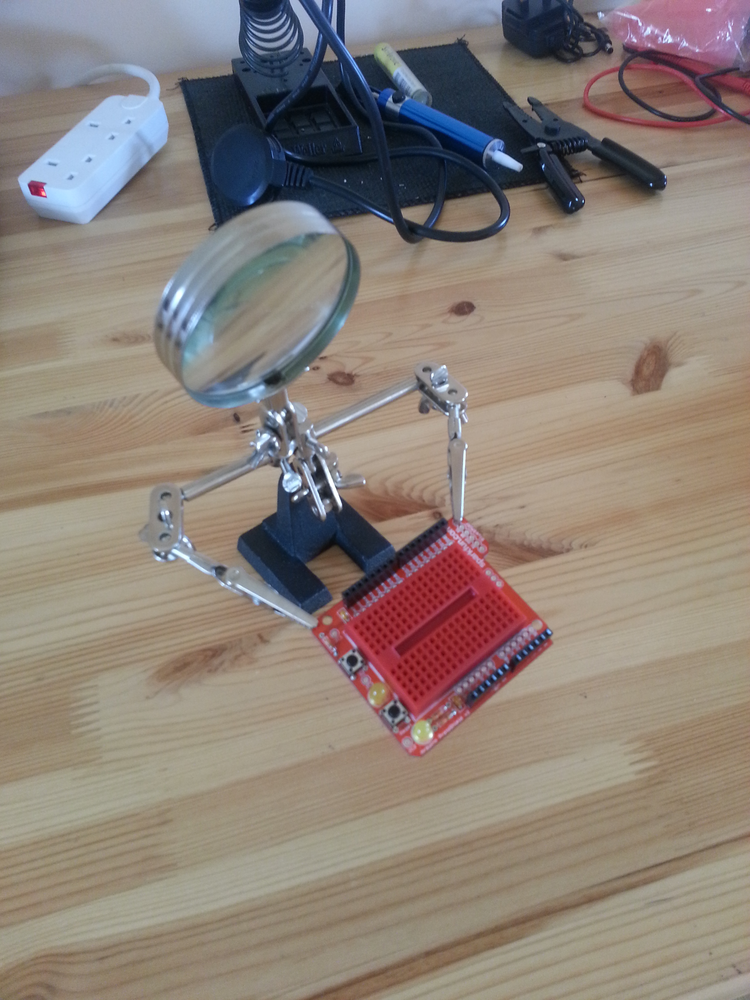
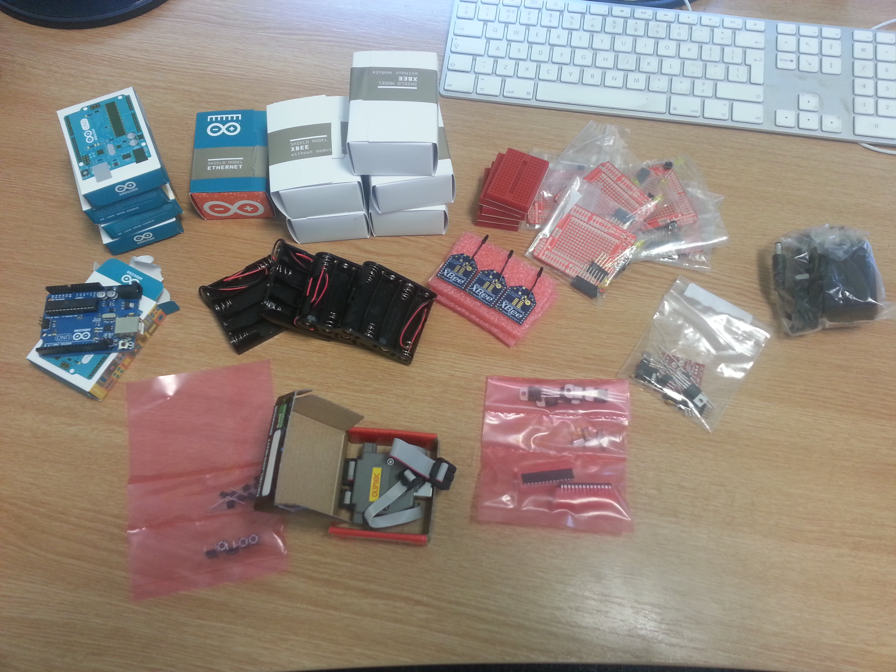

Posts about making (old posts, page 1)
First bit of soldering done
The first proto-shield has been assembled.
The SparkFun prototype shield for the Arduino essentially lets you put a small custom circuit onto an Arduino shield.

The "bare" version has a small area for soldering-up in the middle of the shield. I decided to make a slightly more re-usable version with a small breadboard so I could experiment with the electronics without soldering. The assembly is very easy, although the board is of course very cramped. The "helping hands" were invaluable.
Several lessons learned: I need a finer bit for my soldering iron, a smaller pair of side-cutters for trimming the wires, and my soldering skills are truly appallingly rusty. The shield has a couple of places where it can take additional headers (for controlling the LEDs and using the spare button that's not being used for reset, and to bring the ICSP connectors through) which it would be useful to have.
The parts arrive
The parts have arrived for the ditch project.
The first tranche of hardware came (in a small box) today:

There are parts here for four sensor packages and a base station. The sensor nodes have an Arduino, a 2mW XBee radio, and a digital temperature sensor. The base station has an XBee and a wired ethernet for connecting up to the internet. There are also some prototyping shields to simplify integration, a wall wart power supply for the base station, and some other goodies to support some other development.
Sensor mote initial parts list
The initial design for a sensor mote puts three temperature sensors together with an Arduino and short-range radio module.
The following is the parts list for a single sensor mote:
- Arduino Uno -- £18.50
- Arduino XBee shield -- £12.10
- Arduino Series 2 2mW XBee radio module -- £17.50
- Arduino prototype shield -- £10.40
- Mini-breadboard -- £2.00
- 3 x DS18B20 one-wire digital temperature sensor -- £11.70
- Battery holder -- £1.20
- Enclosure (waterproof, resealable food box) -- £3.50
[UPDATED 11Jul2013: added cost of enclosure]
The ditch project: a motivation
Citizen Sensing's first project is to perform environmental monitoring on a small scale with minimally-specification hardware.
We have three sets of goals from this project. Firstly, we want a realistic scientific project that's simple enough to accomplish over a summer. Secondly, we want to gain some experience with technologies in the field, what works and what doesn't at this level of sophistication. Finally, we want to develop an initial software platform that can support further experimentation. To deal with these in order:
The science will be very simple. Some areas have climates that vary over very short distances, and these variations can affect the flora and fauna that live there. In particular, areas like depressions and ditches often have different temperature profiles than the surrounding areas, with less variation in temperature, that may suit some species. While this is clear in general, the specifics often aren't well-understood, so it's a worthwhile scientific exercise to measure temperature variation around a small area. Specifically, we'll seek to measure temperature variation around a ditch we have access to, in County Sligo in the West of Ireland.
The technology will be off-the-shelf hardware, using Arduinos for processing and XBee radios for communications. These are extremely cheap commodity items that haven't really been used for experimental environmental science, and it's by no means clear that they're appropriate for building a long-lived, robust sensor network.
The main software challenges include working the hardware and -- more significantly -- managing the very limited power budget one gets with standard batteries and hardware. In building the software, we're aiming for a re-usable platform that can be packaged in a form so that the experiment can be reproduced or used as the basis or other experiments by other groups of scientists.
Is this a worthwhile project? From a scientific point of view its clearly questionable, but that's not the point: this sort of experiment is representative of a wide range of environmental sensing, both citizen and professional, so making it work opens the door to a wider spectrum of investigations without getting bogged-down initially in the details of a scientific challenge when the computing is so new and uncertain.
The blog for the project will let you follow all the gory details.
Actor systems
In computer science, an actor system is a way of building programs that are very concurrent and very amenable to scheduling and management.
The idea of an actor system goes back to the PhD work of Gul Agha. His actor model structures programs around a collection of simple agents called (unsurprisingly) actors. Each actor associates a mailbox with a behaviour. The mailbox receives messages from other actors or from outside the actor system. Messages are queued in mailboxes until processed one at a time by the associated behaviour.
The behaviour itself is a piece of code that, when run to process a message, performs bounded computation on the message's contents, which may involve sending messages to other actors and creating other actors (and their mailboxes). The boundedness of the computation is important: an actor is guaranteed to run for a finite amount of time before completing, and so cannot (for example) perform an unbounded loop. An actor's last action before terminating is to nominate a replacement behaviour for its mailbox, which may be the current behaviour or some new behaviour. (A null behaviour that did nothing in response to a message would essentially delete the actor.)
The complexity of the system is clearly going to come from how the behaviours are selected an scheduled. The model says very little about scheduling, leaving the implementation to decide when to process messages (by running the behaviour of the associated actor). A single-threaded implementation might repeatedly select a mailbox at random, check whether it contained messages and, if so, process one. A multi-threaded implementation could have one thread per mailbox running behaviours as messages arrive. There are plenty of other possibilities in between: the point is that an actor program doesn't control the concurrency, it simply induces it by the way it creates actors and sends messages.
A system without unbounded loops can't express general computation, but actor systems do allow unbounded computation: they simply force the programmer to create it using communicating actors. An actor wanting to loop forever could, for example, receive a message, perform some processing, send another message to itself (its own mailbox), and then nominate itself as its own replacement behaviour, which would then receive the self-sent message, and so forth.
If the actor model sounds restrictive, that's because it is deliberately designed that way. Its strength is that it is immune from deadlock, since the finite behaviours cannot become stuck indefinitely. This doesn't preclude the possibility of livelock if the system busily processes messages without actually making progress. However, the boundedness of behaviours means that the scheduler is always guaranteed to get control back on a regular basis, which means that there is always the possibility of an actor being able to run, making actor systems immune to starvation.
It's easy to build something that looks roughly like an actor system in a general-purpose programming language -- and usually pretty much impossible to build something that is actually an actor system. This is because a general-purpose programming language will allow behaviours that include unbounded loops, so you can't guarantee that a behaviour will terminate, and so you lose one of the major features of actor systems: their deadlock-freedom. With suitable programmer care, however, you can build an actor system quite easily, deploying however much concurrency is appropriate for the application and platform the system runs on.